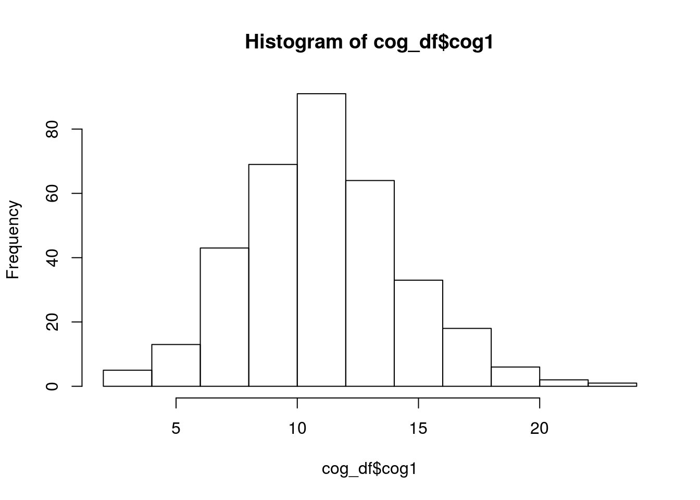
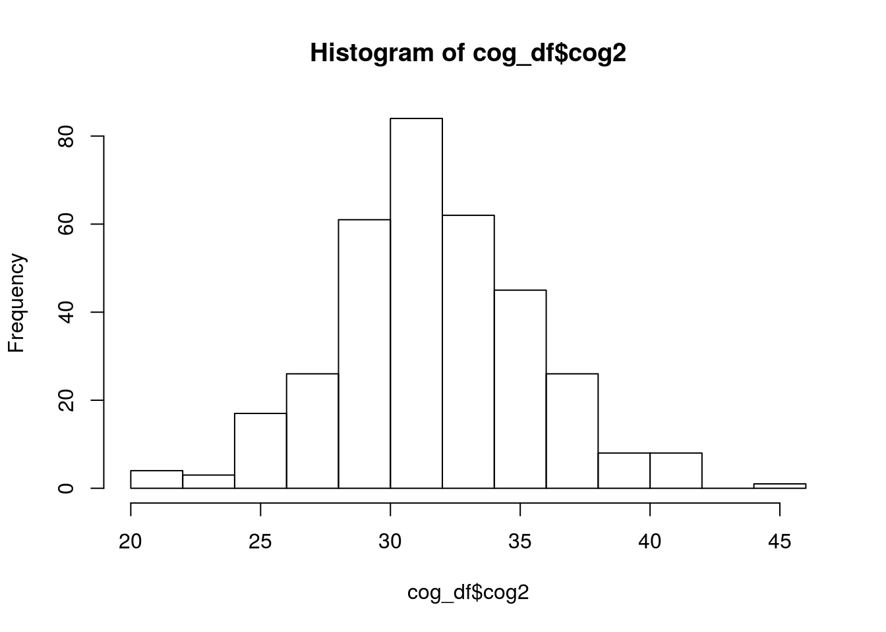
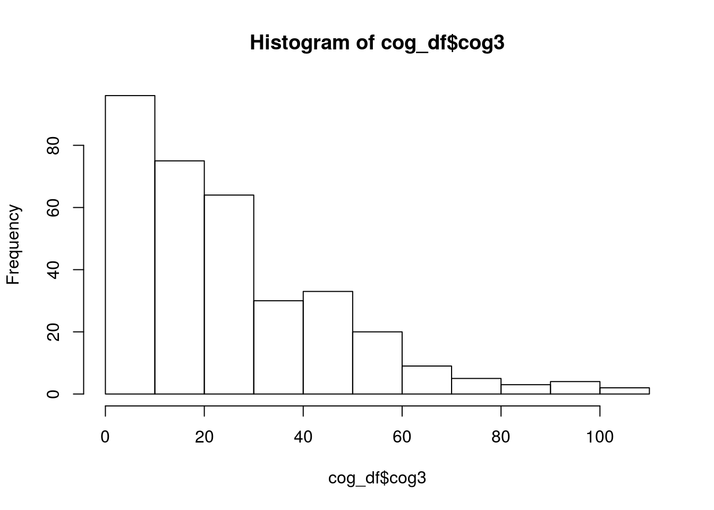

Chapter 2 Importing Data into R
2.1 Read in data
The two datasets provided are as follows:
- messy_demographic.csv:
- 5 variables:
- age, diagnosis (dx), ethnicity, sex, and subject identifier (subject_ID)
- messy_cognitive.csv:
- 4 variables: +three cognitive scores (cog1, cog2, cog3), and subject identifier (subID)
In order to view and manipulate this data in R, we need to import the data into our R workspace (the same as you would open a file in excel to edit it).
Rstudio trick:
- Click on the Environment Tab, then click on Import Dataset –> From text File
- Navigate the browser window to the location of messy_cognitive.csv and click Open
- This opens a text reader window: You see the raw text on the top and what R will read in (the data frame) at the bottom
- In my view, it looks like the R is not going to read in the first line as a header..to change this
- switch the Heading option on the right to yes
- Click Import
- Now, if you look at the Environment tab you should see that data1 has been loaded into R, It has 350 rows (or observations) and 5 variables
- So that you do not have to type this again tomorrow - go to History, click on the line “data1 <- read.csv(…)” and then click on To Source
- Repeat this whole process for messy_demographic.csv
library(readr)
data1 <- read_csv("~/Downloads/messy_demographic.csv")
data2 <- read_csv("~/Downloads/messy_cognitive.csv")- What you actually did was use the read.csv function… to find out more about this option you can type “?read.csv” in the Console
- This is the basic syntax of R functions: some.function(“stuff inside to do the function on”)
- The help document for the read.csv function is shown in the Help tab
Now we have two “data frames” loaded into our workspace. They are called data1 and data2.
2.2 Basic data summaries and visualization ( head, tail, describe() )
- Now that we have the data loaded, how do we just look at it? The simplest way is with the “View” function within rstudio.
- In Enviroment tab. Click on the little spreadsheet to teh far right of the data1.csv row… this shows you your data in what looks like a spreadsheet - but you cannot edit it!
To look at the top six rows of your data:
head(data1)## # A tibble: 6 x 5
## subject_ID age sex ethnicity dx
## <chr> <chr> <int> <chr> <chr>
## 1 SUB_1 43 0 Cauc 0
## 2 SUB_2 47 1 Cauc 1
## 3 SUB_3 69 1 Cauc 1
## 4 SUB_4 51 0 Cauc 1
## 5 SUB_5 52 1 Cauc 0
## 6 SUB_6 71 0 AA 1To look at the bottom six rows:
tail(data2)## # A tibble: 6 x 4
## subID cog1 cog2 cog3
## <chr> <chr> <chr> <chr>
## 1 subject345 10.5491439098318 29.0366805293698 50.0341778674542
## 2 subject346 13.7560798734217 21.047620123942 11.2510017219872
## 3 subject347 16.4949897425522 33.323511618334 2.42614834379569
## 4 subject348 11.1612493587292 30.8723352333704 16.0049438698844
## 5 subject349 15.3654440645612 29.7598065423247 44.3994545119479
## 6 subject350 13.993297479479 28.3229119000634 11.2012255384154Using the function names() tells us what all the variables in our dataframe are called.
names(data1)## [1] "subject_ID" "age" "sex" "ethnicity" "dx"the ls() function does the same thing, except it returns the variables in alphabetical order
ls(data1)## [1] "age" "dx" "ethnicity" "sex" "subject_ID"That was all nice, but we want to find out more about this data we can use “summary”
summary(data1)## subject_ID age sex
## Length:350 Length:350 Min. : 0.00
## Class :character Class :character 1st Qu.: 0.00
## Mode :character Mode :character Median : 1.00
## Mean : 29.44
## 3rd Qu.: 1.00
## Max. :9999.00
## NA's :3
## ethnicity dx
## Length:350 Length:350
## Class :character Class :character
## Mode :character Mode :character
##
##
##
## summary(data2)## subID cog1 cog2
## Length:350 Length:350 Length:350
## Class :character Class :character Class :character
## Mode :character Mode :character Mode :character
## cog3
## Length:350
## Class :character
## Mode :character2.3 Data cleaning
- Now that you have looked at your data - you might have noticed that there are a couple probems The RA that you have been working with have coded missing values in three different ways (“9999”, “missing”,and “NA”)
- We first need to set these all to NA - which R recognizes as missing value:
The following will take all values in data1 that are equal to “”, “missing”, or “9999”, and code them as missing in a way that R understands:
data1[data1==""] <- NA
data1[data1=="missing"] <- NA
data1[data1=="9999"] <- NABecause R is “smart”, it categorizes data types automatically when data are loaded. Before working with new data, especailly if it is real (i.e. messy), it is important to tell R what kind of data you are dealing with. This will be especially important when we discuss our statistical analyses… after all, R is statistical software.
The following will correctly format our variables for analyses:
- age is a numeric variable
- ethicity is a discrete factor
- sex is a discrete factor
- diagnosis is a discrete factor
data1$age <- as.numeric(as.character(data1$age))
data1$ethnicity <- factor(data1$ethnicity,levels=c("Cauc","AA","As","In","Other"))
data1$sex <- factor(data1$sex, levels=c(0,1), labels=c("Male","Female"))
data1$dx <- factor(data1$dx, levels=c(0,1), labels=c("Control","Case"))By indicating the levels of our factors, we have erased from R the memory that we once had values of “”, “9999”, and “missing” (which up until now R had no reason to assume were not observations).
Let us now apply the same cleanup steps to our second data frame:
Remove missing:
data2[data2==""] <- NA
data2[data2=="missing"] <- NA
data2[data2=="9999"] <- NACorrectly format variables for analyses:
data2$cog1 <- as.numeric(as.character(data2$cog1))
data2$cog2 <- as.numeric(as.character(data2$cog2))
data2$cog3 <- as.numeric(as.character(data2$cog3))2.4 Merging data frames
In order to analyze the effect of sex on diagnosis, or perform any other comparison across our data frames, we should merge them. If you remember only this and nothing else today, it will still have been worth your time.
Conceptually, merging two data frames assumes that the rows in one correspond to rows in the other, even if they are not in the same order. In order to match up the correct rows between data frames we need to make sure that one column in each spreadsheet can act as a “key” (i.e. each row has a unique value in this key that is the same in both spreadsheets). In our case, we have one subject identifier column in each of our spreadsheets.
2.4.1 First we need to make sure that the values in these columns are the same
We are going to make use a package called stringr, which was built to help us manipulate “strings” (string is a computer science word of sets of characters).
Note: There are many ways to deal strings in r, too many ways in fact. stringr was created to make the commands working with strings more consistent so that your code will be easier for another person to read.
library(stringr)
data2$subject_ID <- str_replace(data2$subID,"subject","SUB_")We can then merge the two datasets by specifying their names (in order x,y) and then specifying which columns are to be used as the key to merging the two data frames (by.x and by.y):
library(dplyr)
alldata <- inner_join(data1,data2,by="subject_ID")Skipping ahead a little - now we can look at histograms of our numeric variables, just to see what we are dealing with:
hist(data2$cog1)
hist(data2$cog2)
hist(data2$cog3)
hist(data1$age)
Now that our data are loaded, cleaned, and merged, it is time to do some basic statistics!
2.4.2 STUDY QUESTION 1: What is the relationship between sex and diagnosis?
For this question, our null hypothesis is that there is no difference in the number of males and females between our case and control diagnosis groups
The ftable() function will give us a 2 x 2 contingency table of the frequency of observations in each category. the formula syntax “y ~ x” is common in R!
ftable(data=alldata,dx~sex)## dx Control Case
## sex
## Male 37 90
## Female 127 86We now want to save that table as an object called “dxXsex_table”:
dxXsex_table <- ftable(data=alldata,dx~sex)Now, in order to test our null hypothesis using a chi-squared test, we simply apply the chisq.test() function to that table:
chisq.test(dxXsex_table)##
## Pearson's Chi-squared test with Yates' continuity correction
##
## data: dxXsex_table
## X-squared = 28.415, df = 1, p-value = 9.791e-08Similarly, we can use the nonparametric Fisher test to get a more exact test statistic:
fisher.test(dxXsex_table)##
## Fisher's Exact Test for Count Data
##
## data: dxXsex_table
## p-value = 5.68e-08
## alternative hypothesis: true odds ratio is not equal to 1
## 95 percent confidence interval:
## 0.1686647 0.4567064
## sample estimates:
## odds ratio
## 0.279488A bit more advanced! This will accoplish the same thing as ftable(), except that here we are indexing our alldata dataframe with the R syntax [
table(alldata[ ,c("dx","sex")])## sex
## dx Male Female
## Control 37 127
## Case 90 862.4.3 STUDY QUESTION 2: What is the relationship between diagnosis and cog1?
for this question, our null hypothesis is that there is no difference in cog1 between our case and control diagnosis groups
t.test(cog1 ~ dx, data=alldata)##
## Welch Two Sample t-test
##
## data: cog1 by dx
## t = -6.347, df = 334.92, p-value = 7.133e-10
## alternative hypothesis: true difference in means is not equal to 0
## 95 percent confidence interval:
## -2.871388 -1.512676
## sample estimates:
## mean in group Control mean in group Case
## 9.940047 12.132079ggplot(alldata, aes(x=dx, y=cog1)) + geom_boxplot()## Warning: Removed 5 rows containing non-finite values (stat_boxplot).
P.S.* Here is an R script with all of the steps we went over today!! Download Intro R script © 2018 GitHub, Inc. Terms Privacy Security Status Help Contact GitHub Pricing API Training Blog About